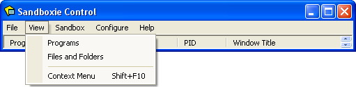

View Menu

Programs
The Programs command selects Programs View, which displays the programs running in each sandbox. This is the default view.
Files and Folders
The Files and Folders selects Files And Folders View, which displays the files and folders in each sandbox.
Context Menu
The Context Menu commands displays the context menu associated with the item that is highlighted (selected). The context menu can also be displayed by clicking the right mouse button on an item. An item is a sandbox, a program, a file or a folder. Not all items appear in all views.